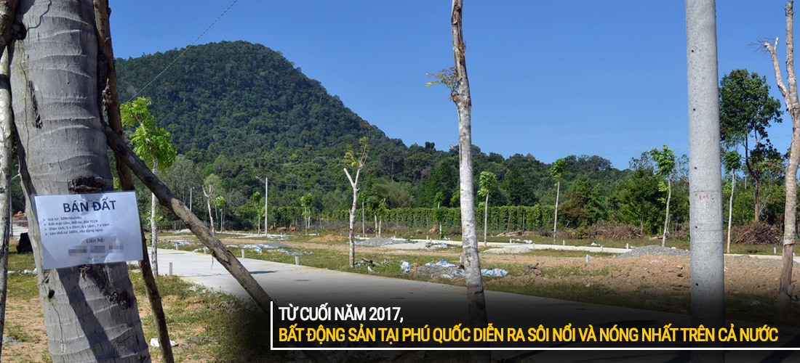
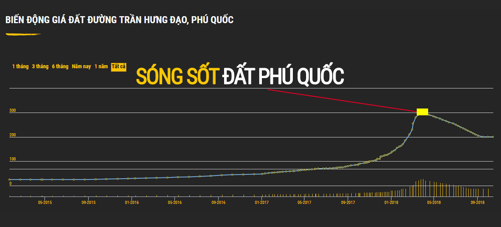

- Giới thiệu Dân Đầu Tư
CÂU CHUYỆN CỦA CHÚNG TÔI
- Quyết định đầu tư BĐS Phú Quốc
- Thương hiệu “Dân Đầu Tư” hình thành
- Thời điểm thị trường Bđs Phú Quốc hỗn loạn
- “Dân Đầu Tư” - chia sẻ & hỗ trợ mọi vấn đề cho nhà đầu tư BĐS Phú Quốc
- Chúng tôi là ai?
Năm 2014, lĩnh vực kinh doanh & đầu tư bất động sản trên cả nước đã “thoát đáy” sau nhiều năm khủng hoảng, suy thoái trước đó. Thị trường bất động sản có dấu hiệu khởi sắc hơn và “Chúng tôi - 1 nhóm người” đã cùng nhau tìm hiểu với những bước đầu tham gia vào “lĩnh vực bất động sản”.
“CHÚNG TÔI LÀ MỘT NHÓM NGƯỜI YÊU THÍCH KINH DOANH & ĐẦU TƯ BẤT ĐỘNG SẢN”
Khoảng thời gian 2014 - 2016, thị trường bất động sản tại Việt Nam có khá nhiều những diễn biến tích cực do những điều chỉnh & luật pháp ban hành mới của chính quyền như: lần đầu tiên Việt Nam mở cửa cho người nước ngoài mua và sở hữu nhà tại Việt Nam (hiệu lực từ ngày 1/7/2015), quy định mới về diện tích các căn hộ, quy định bảo lãnh bán nhà hình thành trong tương lai của các chủ đầu tư, hạ lãi suất vay ngân hàng, nâng thời hạn cho vay, điều chỉnh khung giá đất,...
Và chúng tôi cũng rất may mắn khi bắt nhịp thị trường với các hoạt động mua bán, đầu tư bất động sản tại khu vực Hà Nội. Chúng tôi tham gia đầu tư với phần lớn vốn tài chính vào phân khúc “Chung cư và căn hộ thấp tầng”. Song song là những kết quả khá tốt khi luôn có các giao dịch chuyển nhượng để có thể liên tục xoay vòng vốn và duy trì hoạt động của nhóm.
Thời điểm đó, quy mô nhóm chúng tôi không lớn và chỉ định hướng phát triển ở một số khu vực thuộc thành phố Hà Nội, có mở rộng thêm cũng nhắm tới mục tiêu cố gắng phủ hết các phân khúc bất động sản tại đây!
- Hành trình đến với Phú Quốc
Vào tháng 6/2016, chúng tôi có 1 chuyến bay tới Phú Quốc để tham quan du lịch. Chúng tôi đã tận hưởng hết 6 ngày nghỉ tại đây khi đi 1 vòng quanh đảo Ngọc.
Thời tiết và cảnh quan thiên nhiên tại Phú Quốc rất tuyệt, không khí tại đây mát mẻ, có rừng, có biển,...nơi đây như những vùng quê yên bình vậy! Chúng tôi thực sự cảm thấy thoải mái khi nghỉ ngơi tại các “lán nhà nhỏ gần biển”, ấn tượng bởi những ngọn núi, con đường hoang sơ trên đảo, và các làng chài ở phía Bắc, phía Nam đảo Phú Quốc.
Sau chuyến đi, CHÚNG TÔI CŨNG NHƯ MỌI NGƯỜI ĐỀU NHẬN RA “PHÚ QUỐC VÔ CÙNG TIỀM NĂNG ĐỂ PHÁT TRIỂN DU LỊCH NGHỈ DƯỠNG”
- Cơ duyên với đảo Ngọc
Chúng tôi vẫn hoạt động kinh doanh - đầu tư bất động sản tại Hà Nội, nhưng sau chuyến đi du lịch tháng 6/2016, chúng tôi bắt đầu dành sự quan tâm đến Phú Quốc, hay bất động sản tại Phú Quốc nhiều hơn.
Cho đến cuối năm 2016, chúng tôi nghe và đọc rất nhiều thông tin truyền thông về bất động sản tại Phú Quốc. Và sau đó, chúng tôi đã quyết định đến Phú Quốc để tìm kiếm “cơ hội đầu tư bất động sản” với rất nhiều sự hào hứng, hy vọng cùng với những nhận định riêng về thị trường mà chúng tôi có!
- Quyết định đầu tư BĐS Phú Quốc
Bước đến một thị trường mới với sự cẩn thận và chắc chắn, chúng tôi không lao ngay đầu tư mà dành khá nhiều thời gian để quan sát, tìm hiểu về “nhịp biến động của thị trường bất động sản tại Phú Quốc”. Sau đó, chúng tôi hướng đến việc đầu tư phân khúc “đất công - đất nền” tại Phú Quốc.
Kể từ đầu năm 2017, bất động sản Phú Quốc nóng dần lên và được truyền thông rộng khắp cả nước. Nơi đây thu hút vốn tài chính của rất nhiều các nhà đầu tư, cùng với đó “theo thời gian” thì “giá bất động sản” leo thang từng ngày.
CHÚNG TÔI CÓ NHỮNG GIAO DỊCH ĐẦU TIÊN VÀ SAU ĐÓ LÀ NHIỀU GIAO DỊCH TIẾP SAU KHÁ DỄ DÀNG
Thời điểm quý III/2017 trở đi, các hoạt động chuyển nhượng - giao dịch mua bán bất động sản tại Phú Quốc diễn ra sôi nổi và nóng nhất trên cả nước.

Người mua, người bán nhộn nhịp khắp trên các nẻo đường, các quán cafe, quán ăn,...việc mua đi bán lại bất động sản rất nhanh và dễ dàng, các giao dịch thực hiện phần lớn là công chứng ủy quyền, viết giấy tay để ngay sau đó là bán ra với mức giá chênh (lợi nhuận) hấp dẫn.
Ở PHÚ QUỐC “CÓ TIỀN LÀ CÓ ĐẤT & CÓ ĐẤT LÀ SẼ CÓ RẤT NHIỀU TIỀN”
Chúng tôi cũng như các nhà đầu tư khác luôn chuẩn bị “nguồn tiền mặt sẵn sàng” để có thể mua đất ngay khi được giá và chủ đất xác nhận bán, không giấy đặt cọc - cũng không quá quan tâm đến quy hoạch hay tình trạng pháp lý của mảnh đất.
Cuối năm 2017 - đầu năm 2018, các nhà đầu tư khắp cả nước liên tục bay đến Phú Quốc để tìm mua - đầu tư đất. Thị trường dần hình thành một cơn sốt mà mọi người gọi là “sóng đất” tại đảo Ngọc.

Giá đất / giá bất động sản Phú Quốc tăng lên “từng giờ”, có những khu vực tăng giá gấp 3, 4 thậm chí là gấp 8,9 lần; một mảnh đất có thể mua đi bán lại 2,3 lần trong 1 ngày, các hoạt động giao dịch diễn ra như mua mớ rau ở ngoài chợ Dương Đông vậy!
Đỉnh điểm của cơn sốt “sóng đất” tại Phú Quốc vào tháng 3/2018, nhà nhà mua bán đất - người người là môi giới hay cò đất → bất kể ai cũng có thể là một nhà đầu tư bất động sản!
Lợi nhuận & lãi suất không tưởng từ việc đầu tư bất động sản Phú Quốc giờ đây ai cũng nhìn thấy. Và bởi vậy, các hành vi trái phép xâm chiếm đất đai - xây dựng tràn lan, các giao dịch mua bán ngầm, các hoạt động - chiêu trò lừa đảo ngày một diễn ra nhiều hơn, có thể nói là “đất Phú Quốc trở nên loạn lạc hơn bao giờ hết”.
→ Đây cũng là thời điểm mà chúng tôi bắt đầu xây dựng và phát triển thương hiệu “Dân Đầu Tư” với trang web chính thức là “Dandautu.vn”.
Và đợt “sóng đất” cũng dần thấp & hạ nhiệt từ đầu tháng 4, khi chính quyền thông báo và thực hiện thanh tra - quản lý đất đai tại đảo Ngọc.
- Thương hiệu “Dân Đầu Tư” hình thành
Chúng tôi sẽ nói với bạn vì sao “Dân Đầu Tư ra đời” và “Dân Đầu Tư” hoạt động như thế nào!
- Thời điểm thị trường Bđs Phú Quốc hỗn loạn
Chúng tôi ở đây - Phú Quốc, chứng kiến cảnh thị trường hỗn loạn về giá bất động sản, hỗn loạn về giao dịch chuyển nhượng, hỗn loạn về xây dựng - quy hoạch, hỗn loạn về thông tin và cả những hoạt động chiếm đoạt/ lừa đảo.
Và kéo theo đó là rất nhiều nhà đầu tư đã phải ngậm trái đắng, trả giá đắt tại Phú Quốc khi không tìm hiểu rõ thông tin thị trường mà vội vàng rót vốn tài chính tại nơi đây!
DÂN ĐẦU TƯ RA ĐỜI ĐỂ HỖ TRỢ NHÀ ĐẦU TƯ HẠN CHẾ TỐI ĐA RỦI RO VỀ THÔNG TIN - ĐẦU TƯ BẤT ĐỘNG SẢN TẠI PHÚ QUỐC
- “Dân Đầu Tư” - chia sẻ & hỗ trợ mọi vấn đề cho nhà đầu tư BĐS Phú Quốc
Để giúp các nhà đầu tư nhận được thông tin chính xác về thị trường, chúng tôi - Dân Đầu Tư đã phát triển “kênh thông tin bất động sản Phú Quốc” với tổ hợp rất nhiều tin tức, kiến thức, kinh nghiệm được chúng tôi rút ra và tổng hợp qua quá trình gần 3 năm tham gia đầu tư tại đây.
Thị trường qua đợt sốt, nhưng Phú Quốc vẫn thu hút các nhà đầu tư và chúng tôi muốn giúp các nhà đầu tư tránh những rủi ro, hay có được những bài học mà chúng tôi đã trải qua về các vấn đề “quy hoạch đất, giá trị thực đất, quy trình - thủ tục mua bán đất đai, chiêu trò lừa đảo trong mua bán,...”
“DÂN ĐẦU TƯ RA ĐỜI VỚI NHIỆM VỤ ĐÓNG GÓP CHÚT SỨC LỰC - GIÁ TRỊ NHỎ NHOI ĐẾN VỚI CÁC NHÀ ĐẦU TƯ BẤT ĐỘNG SẢN PHÚ QUỐC!”
Nhà đầu tư có thể tìm thấy mọi thông tin về bất động sản Phú Quốc tại trang web “Dandautu.vn”, tại đây chúng tôi đã hệ thống các thông tin theo từng danh mục để các nhà đầu tư có thể dễ dàng tìm kiếm & tham khảo.
Và có những thông tin mà nhà đầu tư bắt buộc phải biết khi muốn mua bất động sản tại Phú Quốc như 3 mục dưới đây:
- Số 1 - Quy hoạch: Phải kiểm tra quy hoạch đất để biết mục đích sử dụng đất
- Số 2 - Giá đất: Phải nắm được biến động giá đất để có thể định giá bất động sản
- Số 3 - Pháp lý: Phải nắm được quy trình - thủ tục, văn bản luật để đảm bảo an toàn cho quyền sử hữu tài sản khi mua bán bất động sản
Bên cạnh đó, Dân Đầu Tư đóng vai trò là cổng kết nối giữa nhà đầu tư và chủ đầu tư, chúng tôi cũng luôn sẵn sàng hỗ trợ các chủ đầu tư bán hàng hay hỗ trợ nhà đầu tư tìm hàng nhanh chóng và hiệu quả bằng chuyên môn, nhiệm vụ & trách nhiệm của mình!
- Những giá trị Dân Đầu Tư đạt được
Sau thời gian gần 8 tháng đi vào hoạt động, Dân Đầu Tư đã hỗ trợ rất nhiều các nhà đầu tư bất động sản tại Phú Quốc và cùng với đó, chúng tôi cũng đạt được những giá trị vô cùng lớn về số khách hàng đến với mình!
- Hỗ trợ kiểm tra quy hoạch tại Dân Đầu Tư: 18.000 bản quy hoạch
- Thành viên đăng ký theo dõi Dân Đầu Tư: 7.400 người dùng
- Hỗ trợ định giá đất, tư vấn pháp lý, tư vấn đầu tư và hỗ trợ bán hàng: 2.600 khách hàng
- Lượng truy cập/ đến website Dandautu.vn qua 8 tháng hoạt động: 2.960.000 người dùng
Chúng tôi vẫn đang cung cấp những thông tin, hỗ trợ các nhà đầu tư với tầm nhìn “Trở thành kênh thông tin bất động sản Phú Quốc chuyên nghiệp & chất lượng nhất” cùng sứ mệnh “Vì một cộng đồng chia sẻ thông tin có giá trị thực tế, chính xác”.
Dân Đầu Tư xây dựng và phát triển với giá trị cốt lõi “Tạo ra giá trị cho bạn là chữ tín của chúng tôi. Sự hài lòng của bạn là thành công của chúng tôi”.